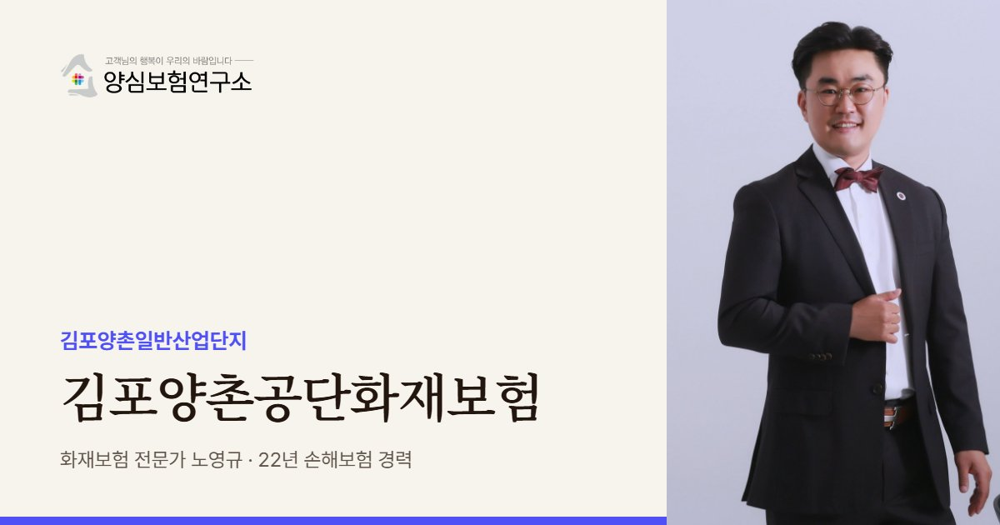

양촌공단은 불에 잘 타는 업종과 주거시설이 한 단지에 있는 곳입니다. 일산 사무실에서 가장 가까운 대형 산단이라 노영규 대표가 직접 자주 찾는 곳이기도 합니다.
김포양촌공단 안내
김포양촌공단, 왜 공장화재보험이 중요할까요?
김포양촌공단화재보험은 김포시 양촌읍 학운리 일원의 김포양촌일반산업단지에 입주한 공장이 화재로 입는 재산 손해와 이웃 공장·주민에 대한 배상책임을 대비하는 보험을 가리킵니다. 양촌공단은 농경지 주변에 흩어져 있던 중소 공장을 모아 정비하려는 목적으로 2010년 준공됐고, 2026년 1분기 기준 963개사가 입주해 있습니다.
유치 업종에는 종이, 인쇄, 플라스틱, 금속, 전자부품, 의료기기, 전기장비가 들어 있습니다. 종이·인쇄·플라스틱은 불이 붙으면 빠르게 번지고 연기가 많은 소재여서, 이런 공장이 모여 있는 구역은 한 공장의 화재가 여러 공장의 손해로 이어지기 쉽습니다. 우리 공장의 업종만큼 이웃 공장의 업종을 함께 봐야 하는 이유입니다.
양촌공단은 조성 당시부터 단지 안에 아파트와 단독주택, 초등학교가 함께 들어선 독특한 구조입니다. 공장과 생활 공간이 가깝다는 것은 화재 때 연기와 유독가스가 주민 피해로 이어질 수 있다는 뜻이어서, 재산 보험과 함께 제3자 배상책임을 무겁게 봐야 합니다. 김포시는 양촌공단을 곧 노후산단으로 분류될 곳으로 보고 구조고도화를 검토하고 있습니다.
바로 옆에는 학운1~7단지가 붙어 있어 주소만으로는 어느 산단인지 헷갈리기 쉽습니다. 2020년 학운리 박스·골판지 공장 화재처럼 기사에 산단명이 명확하지 않은 경우도 많습니다. 보험 서류에는 공장이 속한 산단 명칭을 정확히 적어 두는 것이 좋습니다.
양촌공단에는 흩어져 있던 공장을 옮겨 온 곳이 많아, 이전 전의 오래된 설비를 그대로 가져와 쓰는 경우가 있습니다. 설비가 오래됐다고 가입금액을 낮게 잡으면 다시 사야 할 때 부족분이 생기므로, 같은 성능의 설비를 새로 들이는 비용을 기준으로 가입금액을 따져 보는 것이 좋습니다. 옮겨 온 오래된 설비는 전기 배선과 안전장치도 함께 점검해 기록으로 남겨 두세요.
주요 위험
김포양촌공단화재보험에서 먼저 볼 위험
종이·인쇄 공정
종이와 잉크, 용제는 연소가 빠르고 연기가 많아 재고와 배상을 함께 봅니다.
플라스틱 소재
플라스틱 원료와 제품은 유독가스가 많아 주변 피해가 커질 수 있습니다.
단지 안 주거시설
아파트·학교가 가까워 연기·유독가스에 대한 제3자 배상을 준비합니다.
가연성 업종 밀집
불에 잘 타는 공장이 모인 구역은 연소 확대를 전제로 배상 한도를 봅니다.
학운산단과의 경계
붙어 있는 학운산단과 명칭을 혼동하지 않도록 증권 정보를 정확히 합니다.
의료기기 공정
의료기기 공장은 출고 제품의 책임과 청정 설비 손해를 함께 봅니다.
※ 실제 보장 여부와 한도, 면책 사항은 가입하는 상품의 약관과 공장 현황에 따라 달라집니다.
방문 상담
김포양촌공단 직접 방문 상담
양촌공단은 일산 사무실에서 가장 가까운 대형 산단입니다. 공장을 찾아가 이웃 공장의 업종, 주거시설과의 거리, 재고 적재 상태를 함께 확인합니다.
꼭 확인할 점검 항목
김포양촌공단화재보험 점검 리스트
- 산단 명칭 확인양촌산단인지 학운산단인지 정확히 확인합니다.
- 이웃 공장 업종종이·인쇄·플라스틱 공장이 가까운지 확인합니다.
- 주거시설 거리아파트·학교와의 거리와 방향을 파악합니다.
- 재고 적재 상태적재 높이와 통로 확보 여부를 점검합니다.
- 배상 한도주민 피해까지 고려해 제3자 배상 한도를 점검합니다.
고객 후기
실제 계약고객 만족 사례


※ 실제 계약고객과 나눈 카카오톡 상담과 후기 일부이며, 개인정보는 가렸습니다.
지역 상담 Q&A
김포양촌공단화재보험 Q&A
양촌공단과 학운공단은 어떻게 다른가요?
둘 다 김포 양촌읍 학운리 일원에 붙어 있는 별개의 일반산단입니다. 양촌공단은 2010년 준공된 단지이고 학운공단은 1~7단지로 나뉘어 있어, 보험 서류에는 정확한 명칭을 적어야 합니다.
공장 근처에 아파트가 있으면 무엇을 더 준비하나요?
화재 연기와 유독가스로 주민이 피해를 입는 경우를 대비해 제3자 배상책임 한도를 넉넉히 준비하는 것이 좋습니다.
종이·인쇄 공장은 재고 보험을 어떻게 잡나요?
원자재와 인쇄물이 가장 많이 쌓이는 시기를 기준으로 잡는 것이 안전합니다. 불에 잘 타는 재고라 적재 방식도 함께 점검합니다.
양촌공단 공장 옆 학교나 아파트에서 연기 민원이 들어오면 보험이 도와주나요?
실제 피해가 생겨 배상 책임이 인정되면 배상책임보험이 대응할 수 있습니다. 단순 민원이나 운영 방식에 대한 불만은 보험의 영역이 아니어서 평소 배기·집진 관리가 중요합니다.